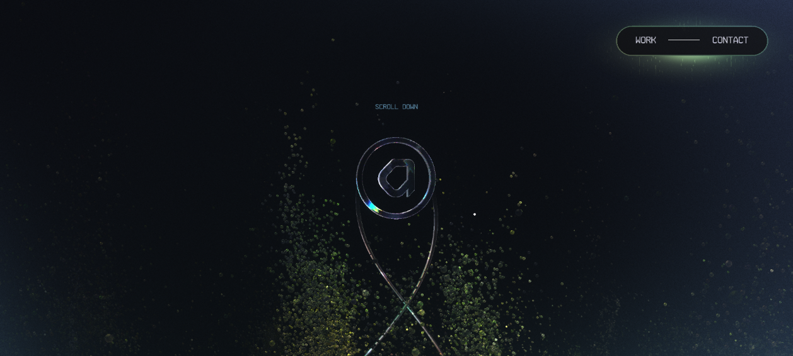

3D & Spatial Design
3D is the loudest tool in the box. Spent well it produces the most-shared, most-awarded work on the web — a drivable car résumé, a procedural igloo that builds as you scroll, a publisher's catalog rendered as a floating bookshelf. Spent badly it ships a 4 MB bundle that strands phones on a black screen with no fallback. This page is the line between the two: how the elite use WebGL/Three.js, depth, cameras, lighting and shaders — and the hard discipline (capability gates, semantic skeletons, reduced-motion) that keeps the spectacle from becoming a liability.
1 · When 3D helps vs. hurts
The first decision is not how but whether. Every site in the corpus that ships heavy 3D earns it one of two ways: the studio sells 3D (so the site must be the demo reel), or the 3D is the content (the catalog, the world, the product). When neither is true, the corpus reaches for stillness.
Resn ↗ states the thesis bluntly: "the interface is the portfolio" — a creative studio proves craft by making the hero a playable 3D object, not by describing it. Active Theory ↗ renders its entire interface — logo, nav, type — inside one particle cosmos so the homepage reads as "we build things the rest of the web can't." Bruno Simon ↗ turns a dev résumé into a drivable open-world game — the single most-referenced 3D portfolio on the web. In all three the 3D is the argument.
The counter-discipline matters just as much. Things · Cultured Code ↗ is "anti-motion" by design — no parallax, no gradient meshes — because their product is calm, and "world-class can mean knowing when NOT to animate." 14islands ↗, who literally author the WebGL tooling the industry copies, keep motion "CSS-first wherever possible; WebGL only where it earns its weight." That is the bar: 3D is a cost you pay for a reason, not a default.
Ship 3D when the 3D is the message — you sell interactive craft, or the content is genuinely spatial (a product, a world, a catalog). Otherwise lead with one scroll-driven hero moment and keep the rest flat. A single signature interaction (Resn's click-and-hold, Igloo's scroll-assembly) outperforms a page full of scattered effects, and costs a fraction of the budget.
2 · Depth & z-layering — most "3D" needs no WebGL
Before you reach for a renderer: a huge share of perceived depth on premium sites is plain CSS. perspective + transform-style: preserve-3d + translateZ() give you real z-layering on the compositor — no canvas, no shader, no bundle. The browser composites the layers in true 3D space and you get parallax, tilt, and pop-out for the price of a transform.
This is the cheap tier of the depth ladder the corpus climbs: 14islands ↗ describe it as a three-step progressive enhancement — no-JS → CSS hover/depth → WebGL cinema — reaching for the GPU only at the top. Family ↗ floats illustration layers with gentle parallax and idle-bob to make a hero feel alive with zero WebGL. Igloo Inc ↗ reserves a single warm emissive "doorway" as the one element that reads as nearest — depth used to direct the eye, not to show off.
Real 3D z-layering, pure CSS — move your pointer over the card (it tilts; the amber node sits 70px in front of the back plane):
perspective: 800px parent. Pointer position maps to rotateX/rotateY; each plane's translateZ sets its depth. This is compositor-only — no layout, no paint, no WebGL. Reduced-motion users get a flat, static card./* True z-layering, zero WebGL. Parent owns the perspective. */
.stage { perspective: 800px; }
.card { transform-style: preserve-3d; transition: transform .15s linear; }
.card .back { transform: translateZ(-40px); } /* recedes */
.card .front { transform: translateZ(70px); } /* pops toward viewer */// Pointer -> tilt. Map cursor offset to rotation, clamp it.
stage.addEventListener('pointermove', (e) => {
const r = card.getBoundingClientRect();
const ry = ((e.clientX - r.left) / r.width - 0.5) * 18; // deg
const rx = ((e.clientY - r.top) / r.height - 0.5) * -18;
card.style.transform = `rotateX(${rx}deg) rotateY(${ry}deg)`;
});Decide depth with the cheapest tool that reads as depth. Layered translateZ covers tilt-cards, parallax heroes, and pop-out badges. Reach for WebGL only when you need real lighting, reflections, custom geometry, or thousands of GPU-driven particles — things CSS physically cannot composite.
3 · The WebGL stack — Three.js, R3F & the in-house engines
Once you genuinely need a renderer, the corpus converges on a clear stack. Three.js is the near-universal base. Igloo Inc ↗ (Three.js + three-mesh-bvh for fast raycasting on dense geometry), Resn ↗, Stripe Press ↗ (photoreal book meshes), and Henry Heffernan ↗ (Three.js r137) all build on it. The React ecosystem wraps it in React Three Fiber (R3F) + drei: Henry Heffernan ↗ and 14islands ↗ both run R3F, the latter through their own open-source @14islands/r3f-scroll-rig.
At the very top end, studios outgrow the library and write their own. Lusion ↗ wrote a custom WebGL renderer (not Three.js) for cloth sim, fluid shaders and real-time GI approximation. Active Theory ↗ built Hydra, a proprietary engine with a node-based GUI and a WebGL UI layer (GLUI) that draws nav and type as GL geometry. Bruno Simon ↗'s 2025 rebuild pushes further still — Three.js on WebGPU, shaders authored in TSL (Three.js Shading Language), physics on Rapier. You do not start here; you start at R3F.
// React Three Fiber + drei — the pragmatic elite baseline (Henry Heffernan, 14islands).
import { Canvas } from '@react-three/fiber';
import { OrbitControls, Environment, Float } from '@react-three/drei';
import { EffectComposer, Bloom } from '@react-three/postprocessing';
export default function Hero() {
return (
<Canvas
dpr={[1, 2]} // cap devicePixelRatio — never render at 3x on a phone
camera={{ position: [0, 0, 5], fov: 45 }}
gl={{ antialias: true, powerPreference: 'high-performance' }}
>
<color attach="background" args={['#06070a']} />
<ambientLight intensity={0.4} />
<directionalLight position={[3, 5, 2]} intensity={1.2} />
<Environment preset="studio" /> {/* image-based lighting */}
<Float rotationIntensity={0.6} floatIntensity={0.8}>
<mesh>
<icosahedronGeometry args={[1, 0]} />
<meshStandardMaterial color="#f5a623" roughness={0.25} metalness={0.6} />
</mesh>
</Float>
<EffectComposer>
<Bloom intensity={0.9} luminanceThreshold={0.6} mipmapBlur />
</EffectComposer>
<OrbitControls enableZoom={false} enablePan={false} />
</Canvas>
);
}The Vue/Nuxt path is TresJS — a declarative Three.js wrapper with the same scene-graph-as-components mental model:
<!-- Vue / Nuxt with TresJS — same idea, Vue components. -->
<script setup>
import { TresCanvas } from '@tresjs/core';
import { OrbitControls, Environment } from '@tresjs/cientos';
</script>
<template>
<TresCanvas clear-color="#06070a" :dpr="[1, 2]">
<TresPerspectiveCamera :position="[0, 0, 5]" :fov="45" />
<TresAmbientLight :intensity="0.4" />
<TresDirectionalLight :position="[3, 5, 2]" :intensity="1.2" />
<Environment preset="studio" />
<TresMesh>
<TresIcosahedronGeometry :args="[1, 0]" />
<TresMeshStandardMaterial color="#f5a623" :roughness="0.25" :metalness="0.6" />
</TresMesh>
<OrbitControls :enable-zoom="false" />
</TresCanvas>
</template>4 · Cameras & scroll-as-driver
The single most repeated technique in the corpus: bind the camera (or an assembly animation) to scroll progress. Scroll stops being "move the document down" and becomes a scrubbable playhead driving a 3D timeline — forward and backward.
Lusion ↗ uses scroll as a "camera/timeline driver" so "each scroll feels like a continuation of a bigger story" — the hero is pinned while the scene evolves. Stripe Press ↗ hooks a camera dolly to scroll position, gliding up a vertical stack of 3D books that rotate to reveal spine → cover → back as they enter frame. Igloo Inc ↗ binds scroll to a procedural assembly — blocks grow and brighten into a domed igloo. The other camera idiom is the scripted cinematic transition: Henry Heffernan ↗'s click-to-begin dollies the camera from an isometric establishing shot into the CRT — "the signature move everyone copies."

// Scroll -> camera. One normalized 0..1 playhead drives camera.position.
// (Pin the canvas, then scrub. Lenis feeds GSAP a single rAF clock — see MOTIONS.)
import gsap from 'gsap';
import { ScrollTrigger } from 'gsap/ScrollTrigger';
gsap.registerPlugin(ScrollTrigger);
ScrollTrigger.create({
trigger: '#stage', start: 'top top', end: '+=300%',
pin: true, scrub: 1,
onUpdate: ({ progress }) => {
camera.position.z = 8 - progress * 6; // dolly in
camera.position.y = progress * 2; // rise up the stack
camera.lookAt(0, progress * 2, 0);
igloo.assemble(progress); // bind your own 0..1 anim
},
});Scroll-as-camera hijacks the scroll thread. It can break position: sticky, anchor jumps, keyboard PageDown/Home/End, and assistive-tech scrolling, and it adds input latency. Always keep keyboard scroll working, never scrub a content/reading page, and collapse the whole mechanism under prefers-reduced-motion (jump straight to the resting frame).
5 · Spatial composition & the stage
Elite 3D scenes are composed like photography, not crammed like a demo. The recurring grammar: one focal object, a deep void around it, chrome pushed to the edges.
Active Theory ↗ calls its negative space "blackspace" — a pure-black void around one luminous orb that "creates a premium, cinematic, low-density feel; nothing competes with the centerpiece." Resn ↗ centers a single revolving crystalline form in maximum negative space — "the dark void is the layout." Igloo Inc ↗ anchors UI to four corners (wordmark top-left, credits top-right) so the structure owns the center. Lusion ↗ frames its canvas with viewfinder "+" corner marks and rules so it reads as a curated stage / technical drawing, and inverts the genre default with a light lavender shell against a dark framed viewport for maximum figure/ground contrast.
Idle motion keeps the stage alive: Resn's form slowly revolves, Active Theory's particle field drifts continuously — "the site is never static." A dead-still 3D scene reads as a frozen screenshot; a slow ambient drift reads as a living world.

Compose 3D like a studio photographer: one hero subject, deep negative space, chrome at the corners, and a slow idle drift so it breathes. Tie color to place if you have multiple scenes — Bruno Simon ↗ gives each district its own accent palette so users always know where they are without a label.
6 · Lighting, bloom & shaders
In a dark 3D scene, light is the accent color. Igloo Inc ↗ uses "light itself" as the accent — emissive ice blocks whose warm-white inner glow intensifies on scroll, with the lit doorway as "the single warm focal accent against the cold field" and chromatic aberration applied globally as a lens treatment. Active Theory ↗ runs a HydraBloom post-process so emissive particles and the orb glow like an energy field. Bruno Simon ↗ leans on emissive/glow materials + bloom for a "synthwave-meets-toybox" look. The common thread: bloom (a post-processing pass that bleeds bright pixels into their neighbours) is what turns flat emissive materials into something that reads as luminous.
For materials and lighting, the corpus splits two ways. Image-based lighting (IBL / environment maps) gives realistic reflections cheaply — Lusion's "premium toy / product-render" matte plastics and Stripe Press's photoreal book covers rely on studio HDRIs. Hand-written GLSL shaders are reserved for effects no standard material can do: Igloo's ice + atmosphere, Lusion's cloth/fluid sim, Resn's deformation-on-click. Bruno Simon now authors these in TSL so the same shader runs on WebGPU and WebGL.
What bloom actually buys you — same emissive orb, with and without a glow pass (faked here in CSS):
UnrealBloomPass samples a blurred bright-pass and adds it back). Bloom is the cheapest way to make a dark scene feel like it emits light — the Active Theory / Bruno Simon signature.// R3F bloom that targets only the bright stuff (luminanceThreshold).
// Push a material's emissiveIntensity > 1 to make it "selected" by the pass.
<mesh>
<sphereGeometry args={[1, 64, 64]} />
<meshStandardMaterial
color="#f5a623" emissive="#f5a623" emissiveIntensity={2.4} toneMapped={false} />
</mesh>
<EffectComposer>
<Bloom
intensity={1.1}
luminanceThreshold={0.6} /* only pixels brighter than this bloom */
luminanceSmoothing={0.3}
mipmapBlur /* cheap, high-quality blur */
/>
</EffectComposer>7 · Performance, fallbacks & load-gating
This is where most 3D ships broken. The corpus is unanimous that the spectacle is conditional on the device being able to afford it.
Gate the experience behind a capability check
Lusion ↗'s explicit guardrail: "gate the heavy WebGL behind a capability / prefers-reduced-motion check and ship a static fallback." 14islands ↗ make progressive enhancement a design system: no-JS → CSS hover → WebGL cinema, with the site fully usable at every tier. Bruno Simon ↗ exposes a "WebGPU / High effects" toggle that "falls back as needed," scaling from phones to high-end desktops. Resn ↗ ships an entirely separate index_mobile.html build rather than push the desktop scene onto phones.
// Don't even instantiate the renderer on a device that can't pay for it.
const canWebGL = (() => {
try { return !!document.createElement('canvas').getContext('webgl2'); }
catch { return false; }
})();
const reduce = matchMedia('(prefers-reduced-motion: reduce)').matches;
const lowMem = (navigator.deviceMemory ?? 8) < 4; // heuristic, not gospel
const coarse = matchMedia('(pointer: coarse)').matches; // phone/tablet
if (canWebGL && !reduce && !lowMem) {
import('./scene.js').then((m) => m.start()); // lazy-load the heavy bundle
} else {
document.querySelector('#hero').classList.add('static-fallback'); // poster image
}Load-gate the heavy boot behind a gesture
A numeric preloader or boot screen turns an unavoidable wait into on-brand theater and satisfies autoplay/WebGL gesture requirements. Lusion ↗ uses a "100" counter that "masks shader compile / asset load, then transitions into the live scene." Henry Heffernan ↗ gates the heavy load behind an intentional START button — "converts a forced load wait into on-brand theater and a required user gesture." Igloo Inc ↗ makes "the intro animation the load, not a spinner."
Keep the asset budget honest
- Compress geometry. Bruno Simon ↗ ships GLTF + Draco, original build "all models under ~2 MB combined." Igloo Inc ↗ authors in Houdini/Blender but bakes/optimizes before shipping.
- Cap
devicePixelRatio. Rendering a full WebGL scene at 3× on a phone is the fastest way to drop frames — clampdprto[1, 2]. - Pause off-screen and in background tabs. Stop the render loop when the canvas isn't visible (the Obys/Apple discipline carried into 3D).
- One canvas, not many. 14islands ↗'s
r3f-scroll-rigrenders one global WebGL context that tracks DOM elements, instead of a canvas per image — a large perf win.
8 · The semantic skeleton — a11y & SEO under the canvas
The sharpest dividing line in the corpus is whether a WebGL site keeps a real DOM underneath. The ones that don't pay a real cost; the disciplined ones get the spectacle and the accessibility.
Active Theory ↗ renders type and nav as GL geometry and has "zero semantic headings — an a11y/SEO cost you may not want to pay." By contrast Stripe Press ↗ mirrors every 3D book with a real <button> + <a> + heading beneath the canvas. Henry Heffernan ↗ exposes fallback links (ABOUT / EXPERIENCE / PROJECTS / CONTACT) as headings in the accessibility tree, "so there is a real semantic skeleton behind the canvas for SEO/a11y/no-JS." Bruno Simon ↗'s drivable world still surfaces buttons in the accessibility snapshot. That is the pattern to copy: the canvas is the experience, the DOM is the contract.
<!-- WebGL is decorative; the real content lives in the DOM beneath it.
Screen readers, crawlers, and no-JS visitors get a complete page. -->
<section class="hero">
<canvas aria-hidden="true"></canvas> <!-- spectacle, hidden from AT -->
<div class="hero-content"> <!-- the contract -->
<h1>Jordan Lee — Creative Developer</h1>
<nav aria-label="Primary">
<a href="/work">Work</a> <a href="/about">About</a> <a href="/contact">Contact</a>
</nav>
</div>
</section>UI-in-WebGL erases the accessibility tree. Text rendered as GL glyphs is invisible to screen readers, unselectable, untranslatable, and uncrawlable. Active Theory and Resn accept that trade for a studio flex; a portfolio that wants to be found and read should not. Keep headings, links, and copy as real DOM and let the canvas be aria-hidden decoration.
9 · The spatial budget — checklist
3D is the highest-cost, highest-variance tool on this whole atlas. Spend it like a budget:
- Have a reason. The 3D is the message (you sell craft) or the content is spatial — otherwise stay flat. (Resn / Things, the two poles.)
- Cheapest depth that reads as depth. CSS
translateZbefore WebGL; one global canvas before many. (14islands.) - One focal subject, deep void, idle drift. Compose like photography; never let the scene go dead-still. (Active Theory / Resn.)
- Bind one camera to scroll. A single scrubbable hero beats scattered effects, forward and back. (Lusion / Stripe Press / Igloo.)
- Light is the accent; bloom sells emission. Threshold the bloom pass; reserve hand-GLSL for effects materials can't do. (Igloo / Active Theory.)
- Gate on capability + reduced-motion; ship a static fallback. Lazy-load the heavy bundle only when the device can pay. (Lusion / Bruno Simon / Resn.)
- Load-gate behind a gesture. A counter or START button covers boot and satisfies autoplay rules. (Lusion / Henry Heffernan.)
- Cap dpr, compress geometry (Draco), pause off-screen. Keep the frame budget honest.
- Keep the semantic skeleton. Canvas
aria-hidden; real headings/links/copy in the DOM. (Stripe Press / Henry Heffernan.)
The pragmatic elite stack, distilled: R3F + drei + postprocessing for the scene → scroll-bound camera (GSAP/ScrollTrigger on Lenis' single clock) for the one signature move → thresholded bloom + IBL for the look → a hard capability/reduced-motion gate with a static poster fallback → a complete semantic DOM under an aria-hidden canvas. You get the Igloo/Lusion feel at a fraction of the cost — and nobody lands on a black screen.